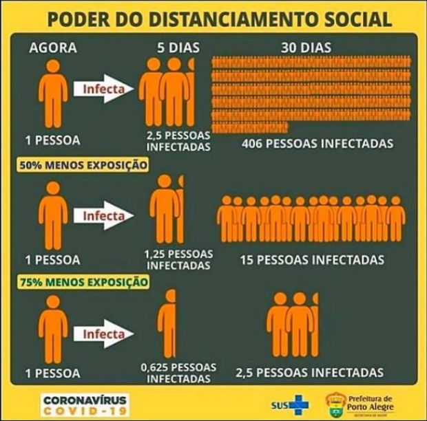

As funções exponenciais são um tipo especial de função matemática que envolve o conceito de potência. Uma função exponencial é escrita na forma f(x) = a^x, onde "a" é uma constante positiva diferente de 1 e "x" é a variável independente. O expoente "x" indica quantas vezes a base "a" deve ser multiplicada por ela mesma.
Um exemplo citado na aula foi o da Pandemia. Segue a imagem abaixo: (referências pela foto no menu inicial)

Percebam que a pessoa na exposição completa depois de 5 dias é estatisticamente capaz de infectar 2.5 pessoas. Já a pessoa que reduziu em 50% sua exposição possui estatisticamente uma chance de infectar 1.25 pessoas, e a pessoa que reduiziu em 75% tem a chance de infectar 0.625.
"Mas Lucas, como assim 2.5 pessoas? e 1.25? e 0.625?" É simples, pois como falado antes são apenas estatísticas, ou seja, no caso da pessoa de 2.5, ela estatisticamente tem a chance de infectar duas pessoas, e existe uma chance de 50% de infectar outra pessoa ou não.
Para resolvermos uma função exponencial de forma facilitada, podemos usar a seguinte tabela passada em aula:
Neste exemplo utilizando pessoas e o valor X, o X representa o expoente que ficará acima do número de pessoas. Essa tabela é muito útil quando necessitamos fazer uma sequência de informações, como tempo passado, e etc.